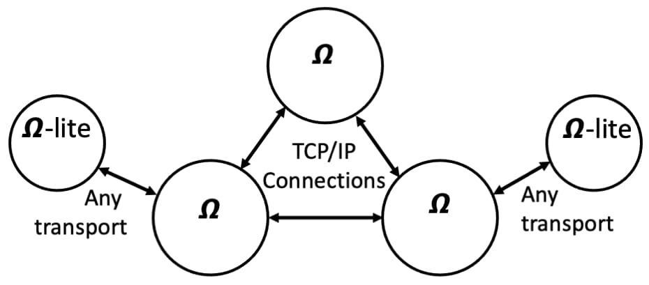
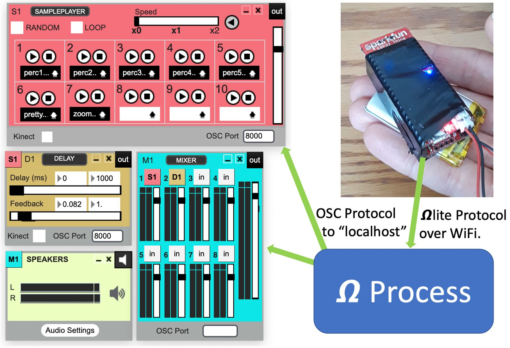
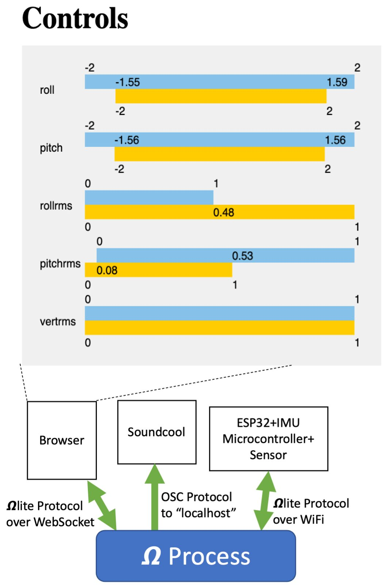

Scalable and Easy-to-Use NIME Networking
Abstract
The protocol extends the real-time messaging features of Open Sound Control with new capabilities including named services, discovery, clock synchronization and timed messages, reliable message transmission, and publish/subscribe capabilities. Recent work has extended with a light-weight protocol to extend capabilities to devices that lack a full implementation of TCP/IP. The new protocol, -lite enables connectivity with small microcontrollers over WiFi, web browsers over WebSockets, and even with threads that communicate through shared memory. -lite makes a direct connection to a single host process and uses the host to provide service discovery and message routing. By off-loading functions to the host, -lite is much simpler to implement and adaptable to many different transports and languages.
Author Keywords
Network, Discovery, Protocol, Music, Sensors, Control, Real-Time
CCS Concepts
•Applied computing → Sound and music computing;
Introduction
New interfaces for musical expression employ a range of devices, hardware, software, operating systems, and other technologies. Researchers and creators, whose first priority may be to design human-computer interfaces, must often create computer-computer interfaces to link sensors and microcontrollers to laptops, personal computers to other computers in a network, various sites across the Internet, and control or mapping processes to synthesis processes. These are just some of the many practical networking scenarios that occur in our practice.
Interconnection problems can be solved in at least three ways: (1) there are many specialized standards1 such as MIDI, SMPTE, Link and DMX512, often associated with off-the-shelf hardware, but not very general; (2) custom one-off solutions based on TCP/IP, RS232, ZigBee and other low-level data transports. These are often the simplest solution when only the simplest functionality is required; (3) higher-level message-passing systems such as Open Sound Control (OSC) [1], SOAP , ZeroMQ [2] and many commercial message-oriented middleware products. In the experimental music community, OSC is arguably the most successful solution due to its flexibility, simplicity, peer-to-peer connections (no third-party intermediary), and available implementations. However, OSC lacks many desirable features.
The 2 system [3] was created to offer a more powerful alternative for experimental music systems and interactive art. It derives from Open Sound Control, adopting the open-ended message format that carries a hierarchical URL-like address and an ordered set of typed parameter values. However, messages also specify a service name that is used to locate the receiving process, and a timestamp for accurate timing3. Perhaps the most important improvement over OSC is that offers discovery over local area networks, so users do not need to enter IP addresses and port numbers to establish network connections as in OSC. This is particularly useful in experimental or home networks where IP addresses are dynamically assigned and domain names and Domain Name System (DNS) servers are unavailable.
The added complexity of comes at a cost. It is not simple to provide the full functionality on the smallest microcontrollers, such as Arduino and ESP32 systems, or on systems without full TCP/IP stacks such as web browsers. Thus, the goal of simple “universal” peer-to-peer discovery and real-time messaging falls short in some important use cases.
A new protocol, named -lite, has been introduced to fill the gap and enable connectivity with the smallest microcontroller systems and with web browsers using WebSockets. The goal of this paper is to explain the motivation and architecture of -lite, present some examples of its use, and describe how -lite, combined with hosts can enable some exiting new capabilities for networked music interfaces.
In the next section, we discuss related work including previous work on . Then, we outline our solution to extending capabilities to small controllers and web browsers. In “Examples,” we describe one use of -lite to create an ESP32-based wireless sensor that automatically connects to an process running on a laptop without requiring a fixed, hard-coded IP address, and a browser-based interface using -lite running over WebSockets capable of controlling a remote process. Finally, we end with conclusions and descriptions of future work.
Related Work
There is a vast literature on computer networks [4] and distributed systems.[5] Looking more specifically to music networks, OSC (mentioned above) introduced a protocol and message format that is versatile yet simple.[1] Libmapper [6] supports a model of mapping input parameters from sources to output parameters at destinations, including dynamic control of mapping functions.
LANdini [7] comes closer to the goals of to address limitations of OSC by providing discovery on a local area network, reliable message transmission as an option, property strings associated with hosts to support identification and configuration of networks, and clock synchronization to support accurate music performance timing. Some of LANdini’s ideas inspired the design of . LANdini uses server processes written in Supercollider, so it would not run in a browser or small microcontroller, and there is no support for connections to these systems or to systems across the Internet.
Like LANdini, MobMuPlat [8] includes a local area network discovery protocol based on broadcast and supports peer-to-peer message passing. MobMuPlat is specifically created to run Pure Data (Pd) on mobile devices [9].
has been described previously [3]. A key feature is that directs messages to the service specified as the first node in an OSC-like address. For example, the address /seq/1/gain is delivered to the process offering the seq service. Multiple processes can run on a single host, or they can exist on separate hosts. A process can offer any number of services, and automatically directs messages to the correct process. processes can also act as OSC clients or servers for easy integration with existing OSC-based systems. Since discovery and interconnection is automatic, we do not want all processes to form one giant network.. Therefore, each process names an ensemble in which it participates. It is possible for multiple ensembles to operate independently on the same network.
Version 2 introduces a number of new features:
Discovery is now accomplished using Bonjour (also known as Avahi) [10], which has robust implementations, a very scalable design, and which has libraries available even for many microcontrollers.
normally directs messages to a specified service, but services can be tapped by another service. A message arriving at the tapped service is copied and sent to the tapping service. A publish/subscribe mechanism can be created simply by sending to a local service (the publisher). Subscribers tap the publisher service to receive the messages. automatically routes messages to subscribers and updates the subscriber list if a subscriber process fails or disconnects.
uses discovery to establish peer-to-peer connections between all pairs of processes, so every process has a small amount of information about every other process, such as the IP address and clock synchronization status. In version 2, each process also maintains and exchanges a property list. For small values such as names, categories (e.g. player, conductor, synthesizer, sensor) or status, properties are a way to broadcast information without sending messages explicitly. When a process joins an network, it immediately receives the current property list of every process it discovers.
uses Bonjour/Avahi for discovery on the same machine or local area network, but this does not work between networks. In version 2, an process can connect to an MQTT broker (server) to discover other processes. MQTT brokers are available for access without accounts or subscriptions and offer a publish/subscribe messaging system. Basically, each process subscribes to a channel and then publishes its IP address and port number to the channel. Other processes listen to the channel to discover new processes. Once a process is discovered, a peer process can either connect directly, or in cases where NAT or other problems prevent a connection, the processes can relay messages through the MQTT broker.
Overview of -lite
A fundamental design assumption of , version 1, that computers should have a full implementation of TCP/IP. This assumption makes it simpler and more practical to offer discovery, reliable messages, and other features, and it is possible even for microcontrollers, given low-cost linux-based controllers such as the Raspberry Pi. [11] On the other hand, there remain cases where full-blown implementations are not possible or desirable. Small, low-power, but limited-memory microcontrollers, such as the ESP32, with its integrated WiFi support, are very popular. In a very different scenario, a huge range of software frameworks and modules exist for web applications, yet browsers do not support general TCP/IP network connections. One can also imagine systems using non-TCP/IP communication over Bluetooth or Zigbee, as well as lock-free shared-memory queues for real-time audio threads. It seems desirable to support some kind of interconnection with these systems.
To allow to work over these and future transports, we decided to introduce a simpler protocol, -lite, which enables bi-directional communication with a single process. We call the process the “host,” and the other process the “-lite process.” The host can offer services on behalf of the -lite process, and when messages arrive for that service, they are forwarded to the -lite process. The -lite process can deliver a message to any service (eventually) by first sending it to the host. Since the host has complete information on all services and processes that offer them , the host can forward the message appropriately.
By leveraging functions and connectivity of the host, -lite is substantially similar to in functionality, yet smaller and simpler. At the cost of an extra “hop” to the host, -lite processes can:
obtain accurate time through synchronization with the clock,
offer services,
obtain the status of other services,
send and receive timestamped messages from any other or -lite process,
use publish/subscribe and tap services.
-lite for ESP32/Arduino
One application of -lite is a light-weight bridge between ESP32-based microcomputers and hosts running on laptops. We use the Arduino development environment, and our implementation uses the existing implementation of Bonjour for discovery. Upon initialization, -lite uses the Bonjour browse functions to search for an host. When a potential host is found, -lite makes a TCP connection to the host and sends !_omega/o2lite/con with its IP address and port number. The “!” prefix is an optimization meaning “address string without wildcards,” and _omega is a special service name that designates functions in the receiving process. The host, if it supports the protocol, replies with !_omega/id and a unique number that can be used to distinguish multiple -lite processes. Next, the -lite process sends !_omega/o2lite/sv with a list of services it offers. Upon receipt, the host executes its own service_new() function to announce each -lite service to all other processes.
From this point on, the -lite process can send messages over TCP or UDP to its host for final delivery, and any message for an -lite service is first received by the host and forwarded over its connection to the -lite process. Thus, using -lite may require an extra transmission between an -lite process and its host, but in simple cases with just one process (the host), that transmission would be necessary anyway. Figure 1 illustrates the topology of three processes (fully connected peer-to-peer) and two -lite processes. Depending on service locations, message delivery takes 0 to 3 hops.


processes form a peer-to-peer network, while -lite processes connect to a single host and use the host’s ability to forward messages to any destination, including another -lite process.
An example application is a wearable wireless 6 degree-of-freedom inertial sensor using an ESP32 Thing and Motion Shield from SparkFun. A previous implementation using OSC over WiFi required the host’s IP address and port number to be hard-coded into the ESP32 code. This meant that the host’s IP address had to be manually set, which interfered with the use of DHCP and connecting to the Internet.
Now, with -lite, the laptop does not need to be reconfigured, and connections are made automatically. To illustrate this application, Figure 2 shows the sensor controlling modules in SoundCool [12]. In this configuration, an host program receives sensor data from the ESP32 over WiFi, maps data to control values and destinations, and formats messages to match the OSC message format expected by Soundcool. connects to Soundcool using its built-in OSC capabilities. By opening OSC connections to “localhost,” and by running on the same computer as Soundcool, these connections do not require discovery or manual entry of IP addresses, although fixed port numbers are used in the Soundcool patch and the control software.


Soundcool patch to play multiple samples (SAMPLEPLAYER module) through a feedback DELAY and MIXER to output (SPEAKERS module). All modules can be controlled via OSC using the Soundcool App on a mobile device, but in this application, OSC messages are sent from a control process that uses to receive sensor data over WiFi and send control messages to Soundcool’s existing OSC interface.
-lite over WebSockets
Another example of -lite is the WebSocket implementation, which allows browser-based applications to send to and receive from an ensemble. As before, the implementation establishes a connection to a single host, which can then forward messages to and from the browser, in this case over a WebSocket connection.4
WebSockets are basically TCP connections between a browser and a web server. Rather than offer the byte-stream model of TCP, WebSockets add a layer layer of text. WebSockets allow messages to be “pushed” to web pages, and web pages can also send data to the server. Thus, WebSockets are a suitable transport to extend -lite to browsers.
To run an application in a browser, one must of course download the application (usually a web page written in HTML 5 including code in JavaScript), so implements a simple HTTP service. By supporting HTTP, it becomes easier to discover the WebSocket server because it is the same as the HTTP server, and with an integrated HTTP service, everything can be self-contained on a local area network (perhaps on stage) without an Internet connection.
As an illustration, we extended the previous example with interactive controls implemented as a web page that runs on mobile devices. We combined an interface written in p5.js [13] with the library lite.js to create an interactive graphical interface to adjust mappings between incoming inertial sensor data and outgoing SoundCool control parameters. This greatly helps to make gestural control more refined and expressive.


Adding control over mapping using a browser interface written in p5.js and the lite over WebSocket protocol. Each row of the novel interface shows the linear mapping from input (top, blue) to output (bottom, yellow). For example, the fourth interface, “pitchrms,” shows that the input range 0 to 0.53 maps to the output range 0.08 to 1. The endpoints of each bar can be dragged to adjust the mapping.
As shown in Figure 3, this interface integrates naturally with the Soundcool+ESP32+Control system of Figure 2. The interface is started by visiting http://localhost:8080/controls.html, which is served by the local process. After establishing a WebSocket connection, the interface is able to send mapping parameters via messages. For example, when the first mapping is adjusted, controls.htm sends parameters “roll”, m and b to address /ctrl/map, where the mapping is , and ctrl is the name of the service that does the mapping.
Although it is convenient in this case to have the browser and Soundcool graphical interfaces on the same screen, one could easily open the browser-based interface on a separate computer or mobile device. For example, one could use the p5.js touches[] system variable to obtain touch screen input and use the data to control a music or synthesis process running on a laptop computer.
Visual Presentation of Linear Mappings
Also shown in (ref?) is a novel interface to display and manipulate linear mappings. The interface consists of two bars representing an input range and an output range respectively. The endpoints of both bars can be dragged left and right to change their orientation. As a simple example, in the middle mapping control in Figure 2, the upper (input) bar has been adjusted so that the maximum input (1) is over output value 0.48. Therefore, the range 0 to 1 is mapped to the range 0 to 0.48.
In this application, the display is translated to a simple linear mapping with no upper or lower bounds. One can imagine additional interface elements to specify limiting the output range or changing the mapping from linear to exponential, logarithmic, and other common mapping functions.
Performance and Evaluation
can be evaluated along many dimensions. In terms of computation, CPU time is negligible considering time spent in the OS’s TCP/IP implementation. We estimate the overhead to be less than 1% of the total CPU time even for messages to the same machine through its loopback interface, which avoids any network transmission. To minimize latency, messages are transmitted in separate packets, but this increases the network overhead compared to consolidating many messages into large packets. Thus, is far from optimal for high-bandwidth data transmission.
is single-threaded so that application message handlers do not need to be thread-safe, which might even hurt real-time performance due to resource locking. Applications call _poll() periodically to run functions, and the polling rate is an important determinant of latency, throughput and power consumption. This parameter is left to the application developer. Another question is how long does _poll() run in the worst case, delaying the application? In the example described here, the maximum duration of a single call to _poll() was 24 ms (real time), running at normal application priority on a MacBook Pro, Intel 2.4 GHz Core i5. The latency is minimized by using asynchronous I/O throughout. For the most time-critical tasks, such as audio signal processing, offers a non-blocking, shared memory implementation of -lite, allowing a high-priority thread to use -lite functions with very low latency.
In terms of discovery, the ESP32 -lite implementation takes about 5 seconds to boot, acquire an IP address from a WiFi hub, discover an host process, and send its first message. For non-local connections, hosts spend a few seconds acquiring their public IP addresses and registering themselves with an MQTT broker. Connection times are largely a function of physical distance.
Ultimately, usability and ease-of-development are more important than optimizing performance. We believe that and -lite make it far easier to construct networked music systems by integrating laptop, microcontroller and browser-based software through named services and automatic discovery.
Summary and Conclusions
-lite is a variation of the protocol, which is designed to easily allow based applications to interoperate with new devices and interfaces. -lite has been implemented using WebSockets to allow browser-based graphical interfaces including those on tablets and smart phones. -lite also has a TCP/IP implementation that runs on ESP32 microcontrollers, and it is easily adapted to other microcontrollers.
-lite is simple to implement, and -lite support for new transports and languages can be added modularly to the library. Although -lite does not directly offer the same power and peer-to-peer connectivity as , -lite obtains connectivity indirectly by using a -process as its gateway to a peer-to-peer network. Once the network is reached, -lite messages are be routed to their destinations, which can be on the same machine, on the local area network, across the global Internet, on another -lite process, or even offered by an OSC server.
Lessons Learned
The original goal of was high connectivity, discovery and advanced functions, but it was only to run over TCP/IP. Even with that limitation, the implementation is complex. -lite has the advantage that the implementation is small and simple, making it practical to provide many implementations supporting microcontrollers, WebSockets and shared memory interfaces, as well as many languages such as Python, Java, C#, Go, Swift, Ruby, Rust, etc.
Discovery and named services have eliminated much of the pain of networking. With , manually assigning IP addresses and port numbers, and carefully (re)starting servers before clients have become a thing of the past. The greater reliability and robustness of leaves more time for using communication and creating music.
Future Development
At present, there is no integration of and Pd [14] or Max MSP. Given the popularity of these platforms in the computer music community, support here is critical and a high priority for future development. Another interesting direction is to use the WebSockets interface to create portable tools for NIME development. Using service queries and taps, a debugging interface can be constructed that attaches to a network and allows the user to “snoop” on messages and even graph sensor data in real time. Debugging distributed systems is notoriously difficult, and this kind of exploratory and monitoring tool could be invaluable. A second useful tool would be an interactive designer for interfaces, where a user could place interactive controls (buttons, sliders, dials, etc.) and associate them to address strings, similar to Interface Builder or the TouchOSC editor.
Since -lite is easier to port to other languages, it might be useful to create a pre-compiled but configurable server that functions merely to forward messages between -lite processes. This would add an extra hop or two to reach services, but LANdini has shown that this is a viable approach.
Acknowledgments
Omitted for anonymity.
Ethics Statement
The system is a free and open-source project, and the author has no conflicts of interest (financial or non-financial) in presenting this work. This research has not involved human participants. In terms of data privacy, should be considered insecure except when operated in a physically secure environment or, in the case of networking, over secured networks such as VPNs.
Footnotes
The great thing about standards is there are so many to choose from. -Anonymous
↩For anonymity, we will use
for review, but the real name will appear in the final version. (2 is a footnote, not an exponent!) ↩Only OSC bundles have timestamps, and OSC does not normally implement clock synchronization, which is a standard part of the
specification and implementation. ↩Ideally, one could use a URL such as
processes running on it. It seems that the evolution of service discovery, browsers and security measures is still in flux. ↩local.myensemble.omegalite:5000to connect to a host, but current browser implementations, including on Android and iOS, restrict connections to “local” URLs, even though they use Bonjour for discovery. In some cases, rather than using the ensemble name, the computer’s hostname can be used, since it has the same IP address as
Citations
- ↩Wright, M., Freed, A., & Momeni, A. (2003). Open Sound Control: State of the Art 2003. Proceedings of the International Conference on New Interfaces for Musical Expression, 153–159.
- ↩Hintjens, P. (2013). ZeroMQ. O’Reilly Media.
- ↩Anonymous. (date). title. Journal, 1(1), 1–10.
- ↩Peterson, L. L., & Davie, B. S. (2021). Computer networks : a systems approach (6th ed.). Morgan Kaufman Publishers-Elsevier Inc.
- ↩Tanenbaum, A. S., & Steen, M. V. (2017). Distributed Systems: Principles and Paradigms (3rd ed.). Prentice Hall.
- ↩Wright, M., Freed, A., & Momeni, A. (2003). Open Sound Control: State of the Art 2003. Proceedings of the International Conference on New Interfaces for Musical Expression, 153–159.
- ↩Malloch, J., Sinclair, S., & Wanderley, M. M. (2015). Distributed Tools for Interactive Design of Heterogeneous Signal Networks. Multimedia Tools and Applications, 15(74), 5683–5707. https://doi.org/10.1007/s11042-014-1878-5
- ↩Narveson, J., & Trueman, D. (2013). LANdini: a networking utility for wireless LAN-based laptop ensembles. Proceedings of the Sound and Music Computing Conference 2013 (SMC 2013), 309–316.
- ↩Iglesia, D. (2016). The Mobility is the Message: the Development and Uses of MobMuPlat. PdCon16 .
- ↩Brinkmann, P., Kirn, P., Lawler, R., Mccormick, C., Roth, M., & Steiner, H.-C. (2011). Embedding Pure Data with libpd. Proceedings of the Pure Data Convention.
- ↩Anonymous. (date). title. Journal, 1(1), 1–10.
- ↩Steinberg, D. H., & Cheshire, S. (2005). Zero Configuration Networking: The Definitive Guide. O’Reilly Media.
Upton, E., & Halfacree, G. (2013). Raspberry Pi User Guide. John Wiley & Sons.
↩- ↩Scarani, S., Muñoz, A., Serquera, J., Sastre, J., & Dannenberg, R. B. (2019). Software for Interactive and Collaborative Creation in the Classroom and Beyond: An Overview of the Soundcool Software. Computer Music Journal, 43(4), 12–24.
- ↩McCarthy, L., Reas, C., & Fry, B. (2015). Getting Started with p5.js. Maker Media.
- ↩Puckette, M. (2002). Max at seventeen. Computer Music Journal, 26(4), 31–43.